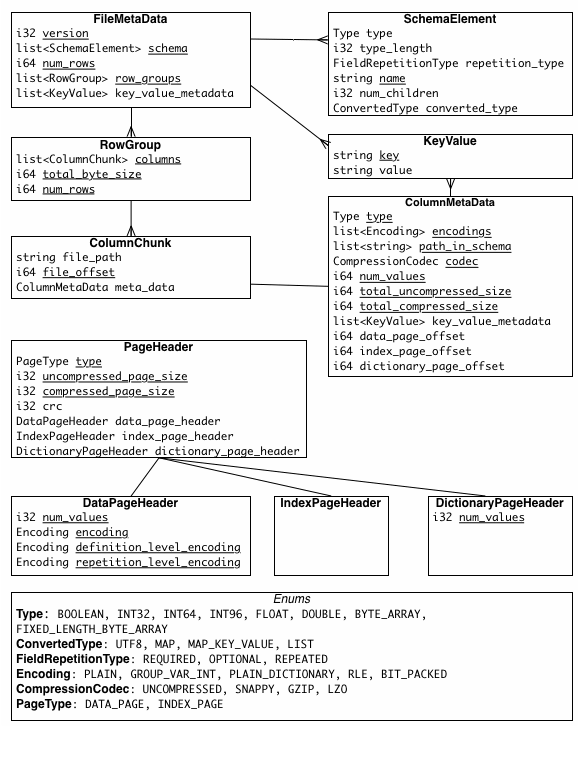

import pyarrow.dataset as ds
import pyarrow as paReading Parquet Metadata
Apache Parquet is a common output format for distributed data pipelines, for example Spark and Presto. The files contain a lot of metadata about the contents of the file which can be useful to understand the data before querying it.
In our usecase we’re going to get metadata from the Common Crawl Columnar Index to help find which Parquet files contain an index to specific URLs.
Using pyarrow dataset
Pyarrow provides excellent support for Parquet and makes it easy to read the metadata.
It only takes 16s to find all the partition data. (Note that you will need an Amazon Web Services account configured to run this because it requires authentication).
%%time
cc_index_s3_path = 's3://commoncrawl/cc-index/table/cc-main/warc/'
cc_index = ds.dataset(cc_index_s3_path, format='parquet', partitioning='hive')CPU times: user 3.14 s, sys: 512 ms, total: 3.65 s
Wall time: 16.9 sWe can access individual files.
cc_index.files[-1]'commoncrawl/cc-index/table/cc-main/warc/crawl=CC-MAIN-2022-05/subset=warc/part-00299-1e2959d8-5649-433a-b76e-f1b876a6479d.c000.gz.parquet'There’s also the get_fragments interface which returns pointers to the original files, but has additional methods and can be filtered.
For example we can list all the WARC files.
%%time
fragments = list(cc_index.get_fragments(filter=ds.field('subset') == 'warc'))
n_warc = len(fragments)
n_warcCPU times: user 138 ms, sys: 3.61 ms, total: 142 ms
Wall time: 145 ms25193Here we just get the fragments for the WARC data from the 2022-05 crawl; which is 300 Parquet files.
%%time
fragments = list(cc_index.get_fragments(filter=(ds.field('crawl') == 'CC-MAIN-2022-05') &
(ds.field('subset') == 'warc')))
len(fragments)CPU times: user 7.51 ms, sys: 716 µs, total: 8.23 ms
Wall time: 8.22 ms300Each fragment consists of an individual parquet file.
fragments[0].path'commoncrawl/cc-index/table/cc-main/warc/crawl=CC-MAIN-2022-05/subset=warc/part-00000-1e2959d8-5649-433a-b76e-f1b876a6479d.c000.gz.parquet'A Parquet file is split into row groups.
fragments[0].row_groups[RowGroupInfo(0),
RowGroupInfo(1),
RowGroupInfo(2),
RowGroupInfo(3),
RowGroupInfo(4),
RowGroupInfo(5),
RowGroupInfo(6),
RowGroupInfo(7),
RowGroupInfo(8),
RowGroupInfo(9),
RowGroupInfo(10)]These row groups contain some statistics. In particular it’s approximately sorted by url_surtkey; if we are looking for a particular URL we can exclude row groups where the URL isn’t between the min and max values.
fragments[0].row_groups[0].statistics{'url_surtkey': {'min': 'com,wordpress,freefall852)/2016/03/29/billy-guy',
'max': 'com,worldpackers)/search/skill_hospitality_entertainment/type_hotel?location_categories[]=nature&location_types[]=hotel&min_meals_count[]=3&months[]=11&skills[]=music'},
'url': {'min': 'http://03.worldchefsbible.com/',
'max': 'https://zh.worldallianceofdramatherapy.com/he-mission'},
'url_host_name': {'min': '03.worldchefsbible.com',
'max': 'zr1.worldblast.com'},
'url_host_tld': {'min': 'com', 'max': 'com'},
'url_host_2nd_last_part': {'min': 'wordpress', 'max': 'worldpackers'},
'url_host_3rd_last_part': {'min': '03', 'max': 'zr1'},
'url_host_4th_last_part': {'min': 'bbbfoundation', 'max': 'www'},
'url_host_5th_last_part': {'min': 'http', 'max': 'toolbox'},
'url_host_registry_suffix': {'min': 'com', 'max': 'com'},
'url_host_registered_domain': {'min': 'wordpress.com',
'max': 'worldpackers.com'},
'url_host_private_suffix': {'min': 'com', 'max': 'com'},
'url_host_private_domain': {'min': 'wordpress.com',
'max': 'worldpackers.com'},
'url_host_name_reversed': {'min': 'com.wordpress.freefall852',
'max': 'com.worldpackers.www'},
'url_protocol': {'min': 'http', 'max': 'https'},
'url_port': {'min': 443, 'max': 2000},
'url_path': {'min': '',
'max': '/▶-if-i-unblock-someone-on-whatsapp-will-they-find-out/'},
'url_query': {'min': '', 'max': 'zh-cn'},
'fetch_time': {'min': datetime.datetime(2022, 1, 16, 9, 32, 20, tzinfo=<UTC>),
'max': datetime.datetime(2022, 1, 29, 15, 10, 45, tzinfo=<UTC>)},
'fetch_status': {'min': 200, 'max': 200},
'content_digest': {'min': '2223CG5SRUGFII5CRWMUD2766UWOL7MU',
'max': 'ZZZZKJBCLHGPU4P2LIHR3X4PZOZSJ4SV'},
'content_mime_type': {'min': 'Application/Unknown', 'max': 'video/x-ms-asf'},
'content_mime_detected': {'min': 'application/atom+xml',
'max': 'video/x-ms-asf'},
'content_charset': {'min': 'Big5', 'max': 'x-windows-949'},
'content_languages': {'min': 'afr', 'max': 'zho,xho,eng'},
'content_truncated': {'min': 'disconnect', 'max': 'length'},
'warc_filename': {'min': 'crawl-data/CC-MAIN-2022-05/segments/1642320299852.23/warc/CC-MAIN-20220116093137-20220116123137-00000.warc.gz',
'max': 'crawl-data/CC-MAIN-2022-05/segments/1642320306346.64/warc/CC-MAIN-20220128212503-20220129002503-00719.warc.gz'},
'warc_record_offset': {'min': 932, 'max': 1202361748},
'warc_record_length': {'min': 489, 'max': 1049774},
'warc_segment': {'min': '1642320299852.23', 'max': '1642320306346.64'}}fragments[0].row_groups[0].id0fragments[0].row_groups[0].num_rows1730100(25_000 /3) / 60138.88888888888889We can go ahead an iterate through all the fragments and extract the row-group data.
Around 2-3/second.
from tqdm.auto import tqdm
from time import time
N = 20
start_time = time()
row_group_statistics = []
for i, f in tqdm(enumerate(fragments), total=len(fragments)):
for row_group in f.row_groups:
row_group_statistics.append(
{'bucket': f.path.split('/', maxsplit=1)[0],
'key': f.path.split('/', maxsplit=1)[1],
'id': row_group.id,
'num_rows': row_group.num_rows,
'min_url_surtkey': row_group.statistics['url_surtkey']['min'],
'max_url_surtkey': row_group.statistics['url_surtkey']['min'],
})
if i >= N:
break
elapsed_time = time() - start_time
elapsed_time7.918716907501221Processing all the files would take around this many minutes:
(elapsed_time * n_warc / N) / 60166.2468625422319It seems to take an unusually long time to read the row_group statistics.
Using fastparquet
Fastparquet is another system to read Parquet files creates by the Dask Project.
For remote files we need to pass the fsspec filesystem; in this case using s3fs.
from fastparquet import ParquetFile
import s3fs
fs = s3fs.S3FileSystem()It’s quite slow and takes seconds to even access a single file (this just reads the metadata, no data is loaded). It seems like we can pass the whole cc_index_s3_path, but it would take prohibitively long to process. Perhaps this would be better if the compute was located closer to the data (this is being run on a laptop in Australia).
%%time
pf = ParquetFile(fn=fragments[0].path, fs=fs)CPU times: user 176 ms, sys: 56.6 ms, total: 232 ms
Wall time: 2.33 sWe can access all the statistics through the fmd attribue (file meta data).
pf.fmd.row_groups[0].columns[0].meta_data._asdict(){'type': 6,
'encodings': [0, 4],
'path_in_schema': ['url_surtkey'],
'codec': 2,
'num_values': 1730100,
'total_uncompressed_size': 117917394,
'total_compressed_size': 23113472,
'key_value_metadata': None,
'data_page_offset': 4,
'index_page_offset': None,
'dictionary_page_offset': None,
'statistics': {'max': None,
'min': None,
'null_count': 0,
'distinct_count': None,
'max_value': "b'com,worldpackers)/search/skill_hospitality_entertainment/type_hotel?location_categories[]=nature&location_types[]=hotel&min_meals_count[]=3&months[]=11&skills[]=music'",
'min_value': "b'com,wordpress,freefall852)/2016/03/29/billy-guy'"},
'encoding_stats': [{'page_type': 0, 'encoding': 0, 'count': 122}],
'bloom_filter_offset': None}Directly reading Parquet metadata
Apache Arrow datasets and fastparquet are convenient, but they are slow. Let’s see what it takes to read Parquet metadata.
Looking at the Apache Parquet file format the file metadata is at the end of the file, followed by a 4 byte integer describing the metadata length and then 4 bytes with the magic number “PAR1”.

S3 has a HTTP REST interface; while we could use it directly we will access it through boto to abstract away things like authentication.
import boto3
s3 = boto3.client('s3')Let’s start with a single parquet file
file = fragments[0].path
file'commoncrawl/cc-index/table/cc-main/warc/crawl=CC-MAIN-2022-05/subset=warc/part-00000-1e2959d8-5649-433a-b76e-f1b876a6479d.c000.gz.parquet'For Boto we need to separate out the bucket (commoncrawl), from the key (the rest)
bucket, key = file.split('/', 1)Getting the file metadata
Reading in the whole file is going to be slow, so we need to work out where the end of the file is; that is we need to know the file’s length. For a start we’re going to need a way of working out where the end of the file is; that is it’s length.
We can use a HTTP HEAD request, which should return the Content-Length; the size of the file in bytes (8 bits).
%time metadata = s3.head_object(Bucket=bucket, Key=key)CPU times: user 27.4 ms, sys: 7.98 ms, total: 35.4 ms
Wall time: 1.01 smetadata{'ResponseMetadata': {'RequestId': '6AWKV1DJNRTEER3W',
'HostId': 'YtP3flNoav+Ht8NgTRWGNrbeXXvkPbpH2+C1Xo8m2gcD4e9gbZQBazEVnozbS0qEdMXZg4XvQ1g=',
'HTTPStatusCode': 200,
'HTTPHeaders': {'x-amz-id-2': 'YtP3flNoav+Ht8NgTRWGNrbeXXvkPbpH2+C1Xo8m2gcD4e9gbZQBazEVnozbS0qEdMXZg4XvQ1g=',
'x-amz-request-id': '6AWKV1DJNRTEER3W',
'date': 'Mon, 18 Apr 2022 12:23:58 GMT',
'last-modified': 'Sun, 30 Jan 2022 05:01:16 GMT',
'etag': '"45ca767a5b7c8226dd75be1b8bb525f0"',
'x-amz-storage-class': 'INTELLIGENT_TIERING',
'accept-ranges': 'bytes',
'content-type': 'application/octet-stream',
'server': 'AmazonS3',
'content-length': '1344281529'},
'RetryAttempts': 0},
'AcceptRanges': 'bytes',
'LastModified': datetime.datetime(2022, 1, 30, 5, 1, 16, tzinfo=tzutc()),
'ContentLength': 1344281529,
'ETag': '"45ca767a5b7c8226dd75be1b8bb525f0"',
'ContentType': 'application/octet-stream',
'Metadata': {},
'StorageClass': 'INTELLIGENT_TIERING'}The whole file is quite large to read in at once, and there are 300 of them!
content_length = int(metadata['ContentLength'])
f'{content_length / (1024**3):0.1f} GB''1.3 GB'We can just read in the last 8 bytes by passing Range to get_object, which under the hood is using a HTTP Range Requst.
end_byte = content_length
start_byte = end_byte - 8%%time
response = s3.get_object(Bucket=bucket, Key=key, Range=f'bytes={start_byte}-{end_byte}')
end_content = response['Body'].read()
end_contentCPU times: user 11.3 ms, sys: 0 ns, total: 11.3 ms
Wall time: 258 msb'o\xe5\x00\x00PAR1'The end is the magic number for the Parquet format.
assert end_content[-4:] == b'PAR1'This is preceeded by the length of the metadata in bytes.
file_meta_length = int.from_bytes(end_content[:4], byteorder='little')
f'{file_meta_length / 1024:0.1f} kb''57.4 kb'Now we know how long the metadata is we can read it from the file.
end_byte = content_length - 8
start_byte = content_length - 8 - file_meta_lengthNote this takes just a little longer than reading 2 bytes; there’s a relatively high constant overhead per request.
%%time
response = s3.get_object(Bucket=bucket, Key=key, Range=f'bytes={start_byte}-{end_byte}')
file_meta_content = response['Body'].read()CPU times: user 5.33 ms, sys: 4.37 ms, total: 9.7 ms
Wall time: 496 msDecoding file metadata
The Apache Parquet metadata documentation shows the format of the file metadata, which we can parse.
This is pretty involved, so I’ll cheat and use the good work of fastparquet to read the metadata for me.
from fastparquet.cencoding import from_buffer
fmd = from_buffer(file_meta_content, "FileMetaData")It’s using Apache Thrift for the file metadata.
type(fmd)fastparquet.cencoding.ThriftObjectWe can then extract these fields as attributes; like the version
dir(fmd)['column_orders',
'created_by',
'encryption_algorithm',
'footer_signing_key_metadata',
'key_value_metadata',
'num_rows',
'row_groups',
'schema',
'version']fmd.version1Or the schema
fmd.schema[0]{'type': None, 'type_length': None, 'repetition_type': None, 'name': "b'spark_schema'", 'num_children': 30, 'converted_type': None, 'scale': None, 'precision': None, 'field_id': None, 'logicalType': None}fmd.schema[1]{'type': 6, 'type_length': None, 'repetition_type': 0, 'name': "b'url_surtkey'", 'num_children': None, 'converted_type': 0, 'scale': None, 'precision': None, 'field_id': None, 'logicalType': {'STRING': {}, 'MAP': None, 'LIST': None, 'ENUM': None, 'DECIMAL': None, 'DATE': None, 'TIME': None, 'TIMESTAMP': None, 'INTEGER': None, 'UNKNOWN': None, 'JSON': None, 'BSON': None, 'UUID': None}}And the row groups
fmd.row_groups[0].total_byte_size452304596fmd.row_groups[0].columns[0].meta_data._asdict(){'type': 6,
'encodings': [0, 4],
'path_in_schema': ['url_surtkey'],
'codec': 2,
'num_values': 1730100,
'total_uncompressed_size': 117917394,
'total_compressed_size': 23113472,
'key_value_metadata': None,
'data_page_offset': 4,
'index_page_offset': None,
'dictionary_page_offset': None,
'statistics': {'max': None,
'min': None,
'null_count': 0,
'distinct_count': None,
'max_value': "b'com,worldpackers)/search/skill_hospitality_entertainment/type_hotel?location_categories[]=nature&location_types[]=hotel&min_meals_count[]=3&months[]=11&skills[]=music'",
'min_value': "b'com,wordpress,freefall852)/2016/03/29/billy-guy'"},
'encoding_stats': [{'page_type': 0, 'encoding': 0, 'count': 122}],
'bloom_filter_offset': None}And the location of each column
fmd.row_groups[1].columns[0].file_offset134217728Putting it together
We can combine all of this into a single function.
def parquet_metadata_s3(path, s3):
metadata = s3.head_object(Bucket=bucket, Key=key)
content_length = int(metadata['ContentLength'])
end_response = s3.get_object(Bucket=bucket, Key=key, Range=f'bytes={content_length-8}-{content_length}')
end_content = end_response['Body'].read()
if end_content[-4:] != b'PAR1':
raise ValueError('File at %s does not look like a Parquet file; magic %s' % (path, end_content[-4:]))
file_meta_length = int.from_bytes(end_content[:4], byteorder='little')
file_meta_response = s3.get_object(Bucket=bucket, Key=key,
Range=f'bytes={content_length-8-file_meta_length}-{content_length-8}')
file_meta_content = file_meta_response['Body'].read()
fmd = from_buffer(file_meta_content, "FileMetaData")
return fmdThis is quicker than fastparquet (although perhaps doing less), and a little faster than pyarrow.
%time fmd = parquet_metadata_s3(file, s3)CPU times: user 22 ms, sys: 258 µs, total: 22.2 ms
Wall time: 1.02 sUsing HTTP
Common Crawl also exposes a HTTP Interface to the S3 buckets hosted using AWS CloudFront. We can try to access those instead.
Using Pyarrow
Pyarrow can read the files from anything that supports fsspec, and so we can pass a HTTPFileSystem.
from fsspec.implementations.http import HTTPFileSystem
http = HTTPFileSystem()However it can’t discover the partitions and files because there is no way to list them over HTTP; only the individual files can be accessed. We can manually pass the files however.
http_files = ['https://data.commoncrawl.org/' + x.split('/', 1)[1] for x in cc_index.files]
http_files[0]'https://data.commoncrawl.org/cc-index/table/cc-main/warc/crawl=CC-MAIN-2013-20/subset=warc/part-00000-6ac52f25-05a1-4998-adf1-b8c830c08eec.c000.gz.parquet'%%time
cc_index_http = ds.dataset(http_files, format='parquet', partitioning='hive', filesystem=http)CPU times: user 1.16 s, sys: 110 ms, total: 1.27 s
Wall time: 2.97 s%%time
fragments_http = list(cc_index_http.get_fragments())CPU times: user 296 ms, sys: 0 ns, total: 296 ms
Wall time: 294 msThis runs at a similar rate to S3.
from tqdm.auto import tqdm
from time import time
N = 20
start_time = time()
row_group_statistics = []
for i, f in tqdm(enumerate(fragments_http), total=len(fragments_http)):
for row_group in f.row_groups:
row_group_statistics.append(
{'bucket': f.path.split('/', maxsplit=1)[0],
'key': f.path.split('/', maxsplit=1)[1],
'id': row_group.id,
'num_rows': row_group.num_rows,
'min_url_surtkey': row_group.statistics['url_surtkey']['min'],
'max_url_surtkey': row_group.statistics['url_surtkey']['min'],
})
if i >= N:
break
elapsed_time = time() - start_time
elapsed_time31.016972541809082Accessing HTTP endpoint directly
This is essentially the same as the S3 Boto version.
import requests
def parquet_metadata_http(url, session=requests):
metadata = session.head(url)
metadata.raise_for_status()
content_length = int(metadata.headers['Content-Length'])
end_response = requests.get(url, headers={"Range": f'bytes={content_length-8}-{content_length}'})
end_response.raise_for_status()
end_content = end_response.content
if end_content[-4:] != b'PAR1':
raise ValueError('File at %s does not look like a Parquet file; magic %s' % (path, end_content[-4:]))
file_meta_length = int.from_bytes(end_content[:4], byteorder='little')
file_meta_response = requests.get(url, headers={"Range": f'bytes={content_length-8-file_meta_length}-{content_length-8}'})
file_meta_response.raise_for_status()
file_meta_content = file_meta_response.content
fmd = from_buffer(file_meta_content, "FileMetaData")
return fmdThe result is a similar speed to the S3 version.
%time fmd = parquet_metadata_http(http_files[0])CPU times: user 91.9 ms, sys: 0 ns, total: 91.9 ms
Wall time: 1.59 sSpeeding up with asyncio
Most of the time is spent waiting for the remote server, and transferring data over the network. We want to do this for a very large number of files. This is a perfect use case for asyncio; instead of waiting for each request to complete before starting the next we can switch to running a new request while the first is waiting.
I’m still learning asyncio, and I mostly adapted this from Stackoverflow.
import asyncio
import aiohttp
async def _async_parquet_metadata_http(url, session):
async with session.head(url) as response:
await response.read()
output_headers = response.headers
content_length = int(output_headers['Content-Length'])
headers={"Range": f'bytes={content_length-8}-{content_length}'}
async with session.get(url=url, headers=headers) as response:
end_content = await response.read()
if end_content[-4:] != b'PAR1':
raise ValueError('File at %s does not look like a Parquet file; magic %s' % (path, end_content[-4:]))
file_meta_length = int.from_bytes(end_content[:4], byteorder='little')
headers={"Range": f'bytes={content_length-8-file_meta_length}-{content_length-8}'}
async with session.get(url, headers=headers) as response:
file_meta_content = await response.read()
fmd = from_buffer(file_meta_content, "FileMetaData")
return fmdfrom tqdm.asyncio import tqdm_asyncio
async def async_parquet_metadata_http(urls):
async with aiohttp.ClientSession(raise_for_status=True) as session:
ret = await tqdm_asyncio.gather(*[_async_parquet_metadata_http(url, session) for url in urls])
return retThis is orders of magnitude faster than running the requests sequentially.
import time
start_time = time.time()
metadata = await(async_parquet_metadata_http(http_files[:200]))
print(f'Ran in {time.time() - start_time:0.1f} s')100%|██████████████████████████████████████| 200/200 [00:05<00:00, 37.98it/s]Ran in 5.3 sWe can do a simlar thing with S3 using aiobotocore.
Again I don’t have my head around asyncio, so this may be a terrible implementation.
from aiobotocore.session import get_session
async def _async_parquet_metadata_s3(path, s3):
metadata = await s3.head_object(Bucket=bucket, Key=key)
content_length = int(metadata['ContentLength'])
end_response = await s3.get_object(Bucket=bucket, Key=key, Range=f'bytes={content_length-8}-{content_length}')
end_content = await end_response['Body'].read()
if end_content[-4:] != b'PAR1':
raise ValueError('File at %s does not look like a Parquet file; magic %s' % (path, end_content[-4:]))
file_meta_length = int.from_bytes(end_content[:4], byteorder='little')
file_meta_response = await s3.get_object(Bucket=bucket, Key=key,
Range=f'bytes={content_length-8-file_meta_length}-{content_length-8}')
file_meta_content = await file_meta_response['Body'].read()
fmd = from_buffer(file_meta_content, "FileMetaData")
return fmdasync def async_parquet_metadata_s3(urls):
session = get_session()
async with session.create_client('s3') as s3:
ret = await tqdm_asyncio.gather(*[_async_parquet_metadata_s3(url, s3) for url in urls])
return retIt’s quite a bit slower than HTTP. Since S3 has a REST API that boto3 uses I’d expect it to be a similar speed; it would be interesting to find out what is happening here.
But we can just stick to the HTTP interface.
import time
start_time = time.time()
metadata = await(async_parquet_metadata_s3(cc_index.files[:200]))
print(f'Ran in {time.time() - start_time:0.1f} s')100%|██████████████████████████████████████| 200/200 [00:18<00:00, 10.54it/s]Ran in 19.2 sScaling up
What happens as we scale up to the whole index?
We are just interested in the WARC files, which there are a lot of.
warc_files = [f for f in cc_index.files if '/subset=warc/' in f]
num_files = len(warc_files)
num_files25193http_files = ['https://data.commoncrawl.org/' + x.split('/', 1)[1] for x in warc_files]The total length of all the content will be around:
f'{(file_meta_length * num_files) / 1024**3:0.2f} GB''1.38 GB'We’re hitting around 50-60/s, with 3 requests per file giving a total of ~150-200 requests/second. CommonCrawl is geared towards exporting data, so this may be fine but the server may throttle us.
We’re also making ~75k+ requests. There’s a good chance something will go wrong.
I can think of 3 kinds of issues:
- An intermittent issue causes an individual load to fail.
- There is an issue with an individual file and so loading will always fail.
- There is an environmental issue (server rejecting all requests, network down) and all requests fail.
We also don’t want all 25k requests being handled simultaneously, the overhead of managing all the task switching will be too much.
A simple approach is:
- Run a batch of N requests
- Capture any errors and put these jobs in a retry cue (to handle 1)
- Remove any jobs that have been retried too many times (to handle 2)
- If more than x% of the N requests fail abort the process (to handle 3).
Since the data is immutable we can persist the data to disk and resume. One simple solution is sqlitedict. It makes sense to fetch the data as one step, and then extract the data afterwards (since it’s harder to recover from an error in extraction).
Let’s catch common exceptions and raise them
import asyncio
import aiohttp
from typing import Union
async def _async_parquet_metadata_http(url, session):
"""Retrieve Parquet file metadata from url using session"""
async with session.head(url) as response:
await response.read()
output_headers = response.headers
content_length = int(output_headers['Content-Length'])
headers={"Range": f'bytes={content_length-8}-{content_length}'}
async with session.get(url=url, headers=headers) as response:
end_content = await response.read()
if end_content[-4:] != b'PAR1':
raise ValueError('File at %s does not look like a Parquet file; magic %s' % (path, end_content[-4:]))
file_meta_length = int.from_bytes(end_content[:4], byteorder='little')
headers={"Range": f'bytes={content_length-8-file_meta_length}-{content_length-8}'}
async with session.get(url, headers=headers) as response:
file_meta_content = await response.read()
return file_meta_contentasync def fetch_parquet_metadata_http(urls):
async with aiohttp.ClientSession(raise_for_status=True) as session:
ret = await asyncio.gather(*[_async_parquet_metadata_http(url, session) for url in urls], return_exceptions=True)
return retLet’s open a fresh sqlitedict dropping any existing data (in practice we would keep this between sessions, since the data shouldn’t change).
from sqlitedict import SqliteDict
metadata_store = SqliteDict('common_crawl_columnar_index_metadata.sqlite', flag='w')Let’s configure our run and set up some datastructures for tracking.
We will only process jobs that aren’t in the metadata_store.
from collections import defaultdict
max_retries = 3
max_exceptions_per_batch = 5
batch_size = 1000
retries = defaultdict(int)
exceptions = defaultdict(list)
seen = set(metadata_store.keys())
jobs = [x for x in http_files if x not in seen]
len(jobs)25193We can now run through all the jobs
start_time = time.time()
with tqdm(total=len(jobs)) as pbar:
while len(jobs) > 0:
batch = jobs[:batch_size]
batch_metadata = await(fetch_parquet_metadata_http(batch))
num_exceptions = 0
for job, metadata in zip(batch, batch_metadata):
if isinstance(metadata, Exception):
num_exceptions += 1
exceptions[job].append(metadata)
retries[job] += 1
if retries[job] >= max_retries:
jobs.remove(job)
else:
assert isinstance(metadata, bytes)
metadata_store[job] = metadata
jobs.remove(job)
pbar.update()
metadata_store.commit()
if num_exceptions >= max_exceptions_per_batch:
print('Too many exceptions %i' % num_exceptions)
break
print(f'Finished in {time.time() - start_time:0.0f}s')Finished in 441sHow many exceptions are raised?
len(retries), sum(retries.values())(0, 0)Now we have all the headers, we want to extract the relevant metadata.
def get_column_metadata(column, row_group):
matches = [col for col in row_group.columns if col.meta_data.path_in_schema == [column]]
if len(matches) != 1:
raise ValueError(matches)
return matches[0].meta_datastats_columns = ['url_surtkey']
def extract_row_group_metadata(k, v):
fmd = from_buffer(v, "FileMetaData")
for idx, row_group in enumerate(fmd.row_groups):
result = {
'path': k[len('https://data.commoncrawl.org/'):],
'crawl': k.split('/')[-3].split('=')[-1],
'subset': k.split('/')[-2].split('=')[-1],
'row_group': idx,
'num_rows': row_group.num_rows,
'byte_size': row_group.total_byte_size,
}
for col in stats_columns:
minimum = get_column_metadata(col, row_group).statistics.min_value
maximum = get_column_metadata(col, row_group).statistics.max_value
if isinstance(minimum, bytes):
minimum = minimum.decode('utf-8')
if isinstance(maximum, bytes):
maximum = maximum.decode('utf-8')
result[f'min_{col}'] = minimum
result[f'max_{col}'] = maximum
yield resultdef extract_metadata(metadata_store):
for k, v in tqdm(metadata_store.items(), total=len(metadata_store)):
for row in extract_row_group_metadata(k, v):
yield row %%time
import pandas as pd
df_metadata = pd.DataFrame(extract_metadata(metadata_store))CPU times: user 1min 56s, sys: 3.51 s, total: 1min 59s
Wall time: 1min 56sdf_metadata.head()| path | crawl | subset | row_group | num_rows | byte_size | min_url_surtkey | max_url_surtkey | |
|---|---|---|---|---|---|---|---|---|
| 0 | cc-index/table/cc-main/warc/crawl=CC-MAIN-2013... | CC-MAIN-2013-20 | warc | 0 | 1536416 | 609417359 | 1,103,63,50)/ | au,com,adelaidenow)/news/breaking-news/another... |
| 1 | cc-index/table/cc-main/warc/crawl=CC-MAIN-2013... | CC-MAIN-2013-20 | warc | 1 | 35284 | 14185475 | ar,com,buscouniversidad)/maestria-en-ciencias-... | at,belvedere)/de/events/detail/die-nacht-im-zw... |
| 2 | cc-index/table/cc-main/warc/crawl=CC-MAIN-2013... | CC-MAIN-2013-20 | warc | 2 | 1499082 | 638601593 | ar,com,chubb)/ | at,gv,land-oberoesterreich)/cps/rde/xchg/sid-e... |
| 3 | cc-index/table/cc-main/warc/crawl=CC-MAIN-2013... | CC-MAIN-2013-20 | warc | 3 | 1339494 | 551235294 | ar,com,tripadvisor)/hotel_review-g580306-d1194... | at,meinbezirk)/wien/wien-05-margareten/service |
| 4 | cc-index/table/cc-main/warc/crawl=CC-MAIN-2013... | CC-MAIN-2013-20 | warc | 4 | 255538 | 97165599 | at,meinbezirk)/wien/wien-05-margareten/themen/... | at,parents)/forum/archive/index.php/t-182119.html |
metadata_store.close()df_metadata.to_csv('common_crawl_columnar_index_metadata.csv.gz', index=False)Between 2017-43 and 2018-43 it looks like we may not have statistics for url_surtkey and would have to generate them.
(
df_metadata
.groupby('crawl')
.agg(row_groups = ('path', 'count'),
files = ('path', 'nunique'),
min_url = ('min_url_surtkey', 'count'),
max_url = ('max_url_surtkey', 'count'),
)
.query('min_url != row_groups')
.sort_index()
)| row_groups | files | min_url | max_url | |
|---|---|---|---|---|
| crawl | ||||
| CC-MAIN-2017-43 | 2476 | 300 | 0 | 0 |
| CC-MAIN-2017-47 | 2199 | 300 | 0 | 0 |
| CC-MAIN-2017-51 | 2035 | 300 | 0 | 0 |
| CC-MAIN-2018-05 | 2361 | 300 | 0 | 0 |
| CC-MAIN-2018-09 | 2369 | 300 | 0 | 0 |
| CC-MAIN-2018-13 | 2250 | 300 | 0 | 0 |
| CC-MAIN-2018-17 | 2119 | 300 | 0 | 0 |
| CC-MAIN-2018-22 | 1950 | 300 | 0 | 0 |
| CC-MAIN-2018-26 | 2121 | 300 | 0 | 0 |
| CC-MAIN-2018-30 | 2251 | 300 | 0 | 0 |
| CC-MAIN-2018-34 | 1888 | 300 | 0 | 0 |
| CC-MAIN-2018-39 | 2018 | 300 | 0 | 0 |
| CC-MAIN-2018-43 | 2150 | 300 | 0 | 0 |
| CC-MAIN-2019-18 | 4230 | 300 | 4229 | 4229 |
| CC-MAIN-2020-10 | 4347 | 299 | 4344 | 4344 |
| CC-MAIN-2020-16 | 4261 | 300 | 4260 | 4260 |
| CC-MAIN-2020-24 | 3329 | 300 | 3328 | 3328 |
| CC-MAIN-2020-34 | 2957 | 300 | 2956 | 2956 |
| CC-MAIN-2020-40 | 4701 | 300 | 4700 | 4700 |
| CC-MAIN-2020-50 | 3542 | 300 | 3541 | 3541 |
| CC-MAIN-2021-10 | 3738 | 300 | 3737 | 3737 |
| CC-MAIN-2021-17 | 4223 | 300 | 4220 | 4220 |
| CC-MAIN-2021-21 | 3403 | 300 | 3401 | 3401 |
| CC-MAIN-2021-25 | 3321 | 300 | 3317 | 3317 |
| CC-MAIN-2021-39 | 3914 | 300 | 3912 | 3912 |
| CC-MAIN-2021-43 | 4547 | 300 | 4543 | 4543 |
Example usage
Let’s suppose I wanted to find captures of commoncrawl.org, from 2020-24.
results = df_metadata.query('crawl == "CC-MAIN-2020-24" &\
min_url_surtkey <= "org,commoncrawl)/" <= max_url_surtkey')
results| path | crawl | subset | row_group | num_rows | byte_size | min_url_surtkey | max_url_surtkey | |
|---|---|---|---|---|---|---|---|---|
| 217771 | cc-index/table/cc-main/warc/crawl=CC-MAIN-2020... | CC-MAIN-2020-24 | warc | 0 | 1730100 | 550358211 | org,centerar,hr,ww17)/beauty/7-mitova-o-ljepot... | org,copyrolexmenwatches)/pt/rolex-datejust-spe... |
| 217772 | cc-index/table/cc-main/warc/crawl=CC-MAIN-2020... | CC-MAIN-2020-24 | warc | 1 | 1678910 | 513173987 | org,chambresdhotes)/espanol/chambres_d_hotes/d... | org,cpdl)/wiki/index.php?action=history&title=... |
| 217773 | cc-index/table/cc-main/warc/crawl=CC-MAIN-2020... | CC-MAIN-2020-24 | warc | 2 | 1908748 | 583011770 | org,chinafia)/about/2-cn.html | org,crchina)/constitution-of-the-peoples-repub... |
| 217774 | cc-index/table/cc-main/warc/crawl=CC-MAIN-2020... | CC-MAIN-2020-24 | warc | 3 | 1730100 | 537715703 | org,cinelatinoamericano)/cineasta.aspx?cod=4892 | org,cteresource)/verso/courses/8366/physical-o... |
| 217775 | cc-index/table/cc-main/warc/crawl=CC-MAIN-2020... | CC-MAIN-2020-24 | warc | 4 | 1880100 | 541778479 | org,cleancitiessacramento)/photos.html | org,ctrteam)/ |
path_to_row_groups = (
results
.groupby('path')
.agg(row_groups = ('row_group', list))
['row_groups']
.to_dict()
)
path_to_row_groups{'cc-index/table/cc-main/warc/crawl=CC-MAIN-2020-24/subset=warc/part-00245-b4a094ce-c3a1-4796-8c26-d927e48e4b4a.c000.gz.parquet': [0,
1,
2,
3,
4]}%%time
http_prefix = 'https://data.commoncrawl.org/'
search_ds = ds.dataset([http_prefix + path for path in path_to_row_groups], filesystem=http, format='parquet', partitioning='hive')CPU times: user 38.8 ms, sys: 4.97 ms, total: 43.7 ms
Wall time: 1.51 sIt could make sense to parallelise this to speed it up.
columns = ['url', 'url_host_name', 'warc_filename', 'warc_record_offset', 'warc_record_length']
all_groups = []
with tqdm(total=len(results)) as pbar:
for fragment in search_ds.get_fragments():
path = fragment.path[len(http_prefix):]
row_groups = fragment.split_by_row_group()
for row_group_idx in path_to_row_groups[path]:
row_group = row_groups[row_group_idx]
data = row_group.to_table(columns=columns,
filter=ds.field('url_host_name') == 'commoncrawl.org')
if len(data) > 0:
all_groups.append(data)
pbar.update()We can then look at some URLs.
len(all_groups)1results = pa.concat_tables(all_groups).to_pandas()
results| url | url_host_name | warc_filename | warc_record_offset | warc_record_length | |
|---|---|---|---|---|---|
| 0 | http://commoncrawl.org/ | commoncrawl.org | crawl-data/CC-MAIN-2020-24/segments/1590347435... | 27151522 | 5448 |
| 1 | https://commoncrawl.org/2010/10/slideshare-bui... | commoncrawl.org | crawl-data/CC-MAIN-2020-24/segments/1590348521... | 286036900 | 5448 |
| 2 | http://commoncrawl.org/2012/03/data-2-0-summit/ | commoncrawl.org | crawl-data/CC-MAIN-2020-24/segments/1590348521... | 27155726 | 7503 |
| 3 | http://commoncrawl.org/2012/11/the-norvig-web-... | commoncrawl.org | crawl-data/CC-MAIN-2020-24/segments/1590348521... | 25681807 | 6307 |
| 4 | https://commoncrawl.org/2012/12/blekko-donates... | commoncrawl.org | crawl-data/CC-MAIN-2020-24/segments/1590348521... | 289331067 | 6925 |
| ... | ... | ... | ... | ... | ... |
| 60 | http://commoncrawl.org/terms-of-use/ | commoncrawl.org | crawl-data/CC-MAIN-2020-24/segments/1590348521... | 26795983 | 6938 |
| 61 | https://commoncrawl.org/terms-of-use/ | commoncrawl.org | crawl-data/CC-MAIN-2020-24/segments/1590348521... | 285700698 | 6982 |
| 62 | http://commoncrawl.org/terms-of-use/full/ | commoncrawl.org | crawl-data/CC-MAIN-2020-24/segments/1590348521... | 27794892 | 11744 |
| 63 | https://commoncrawl.org/terms-of-use/full/ | commoncrawl.org | crawl-data/CC-MAIN-2020-24/segments/1590348521... | 290639475 | 11778 |
| 64 | https://commoncrawl.org/the-data/get-started/ | commoncrawl.org | crawl-data/CC-MAIN-2020-24/segments/1590348521... | 292834731 | 10750 |
65 rows × 5 columns
Accessing a crawl
a = results.iloc[0]
url = 'https://data.commoncrawl.org/' + a.warc_filename
header = {"Range": f'bytes={a.warc_record_offset}-{a.warc_record_offset + a.warc_record_length}'}
r = requests.get(url, headers=header)
warc_data = r.contentWe can then decompress and examine that WARC record.
import zlib
data = zlib.decompress(warc_data, wbits = zlib.MAX_WBITS | 16)
print(data.decode('utf-8')[:1500])WARC/1.0
WARC-Type: response
WARC-Date: 2020-06-03T17:59:17Z
WARC-Record-ID: <urn:uuid:924c0b54-e18f-4fa2-883f-918ec07cc7aa>
Content-Length: 21001
Content-Type: application/http; msgtype=response
WARC-Warcinfo-ID: <urn:uuid:c9aa942a-7416-4367-8295-bf964f6be17a>
WARC-Concurrent-To: <urn:uuid:25e5d72e-1031-4d58-b6b0-2ae3991f5c91>
WARC-IP-Address: 104.28.20.25
WARC-Target-URI: http://commoncrawl.org/
WARC-Payload-Digest: sha1:CIBK2YFSVPNDFLXUHSKZG2SPN7UNN65W
WARC-Block-Digest: sha1:4N6PX5ISYJ76FDBCKXEFSC2H63XK2AIG
WARC-Identified-Payload-Type: text/html
HTTP/1.1 200 OK
Date: Wed, 03 Jun 2020 17:59:17 GMT
Content-Type: text/html; charset=UTF-8
X-Crawler-Transfer-Encoding: chunked
Connection: keep-alive
Set-Cookie: __cfduid=d21b8d62b496908e52ebb3973abe637321591207157; expires=Fri, 03-Jul-20 17:59:17 GMT; path=/; domain=.commoncrawl.org; HttpOnly; SameSite=Lax
X-Powered-By: PHP/5.5.9-1ubuntu4.29
Link: <http://commoncrawl.org/wp-json/>; rel="https://api.w.org/"
Link: <http://commoncrawl.org/>; rel=shortlink
Vary: Accept-Encoding
Cache-Control: max-age=14400
CF-Cache-Status: HIT
Age: 6364
cf-request-id: 031cef789700000dde34a2b200000001
Server: cloudflare
CF-RAY: 59db4ea0f9bc0dde-IAD
X-Crawler-Content-Encoding: gzip
Content-Length: 20289
<!DOCTYPE html>
<html lang="en-US">
<head>
<meta charset="UTF-8">
<meta name="viewport" content="width=device-width, initial-scale=1">
<link rel="profile" href="https://gmpg.org/xfn/11">
<link href="https://fonts.go